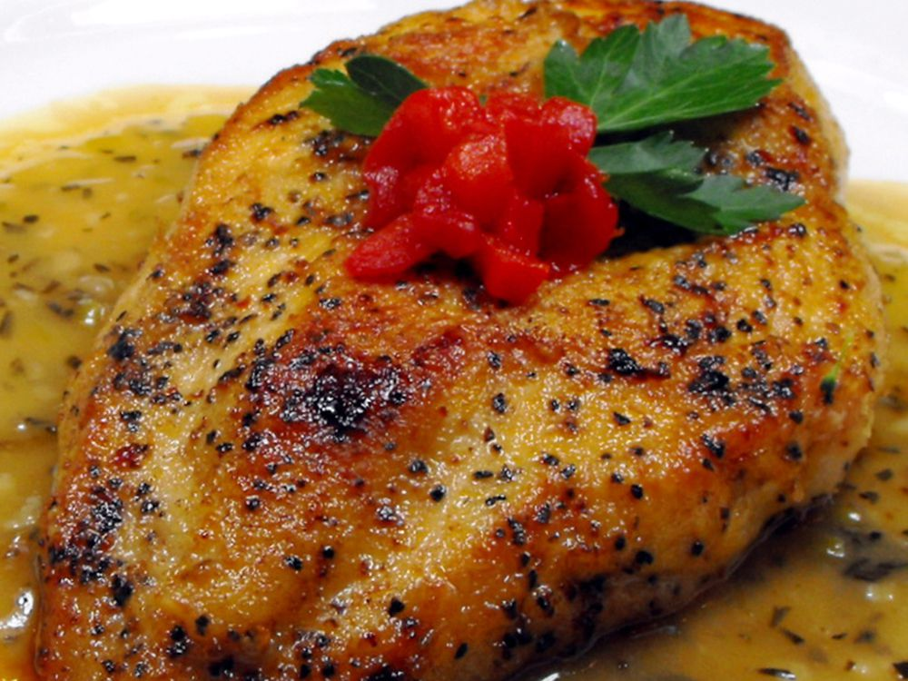

Chicken Scarpariello
<- Go Back

Chicken Scarpariello
Description
A wonderful delicate dish, quick to fix. It is especially nice served over angel hair pasta or white rice.
Ingredients
- 1 ¼ pounds skinless, boneless chicken breast halves
- 3 tablespoons all-purpose flour
- 2 tablespoons olive oil
- 2 teaspoons butter
- 2 tablespoons shallots, minced
- 2 cloves garlic, minced
- 1 cup water
- ½ cup white wine
- 1 cube chicken bouillon
- ½ teaspoon dried rosemary, crushed
- ¼ teaspoon salt
- 1 pinch ground black pepper
Steps
- Cut chicken breasts into 1 x 3 inch strips, and dredge in flour.
- In 10 inch skillet, heat oil and butter. Add chicken. Cook, turning occasionally, until lightly browned on all sides (3 to 4 minutes). Using tongs, remove chicken from skillet. Set aside and keep warm.
- To same skillet, add shallots and garlic. Saute until softened (1 minute). Add water, wine, broth mix, and seasonings. Mix well. Cook, stirring frequently, until liquid is reduced by 1/2 (3 to 4 minutes). Return chicken to skillet, and cook until sauce is thick and chicken is heated through (2 to 3 minutes).